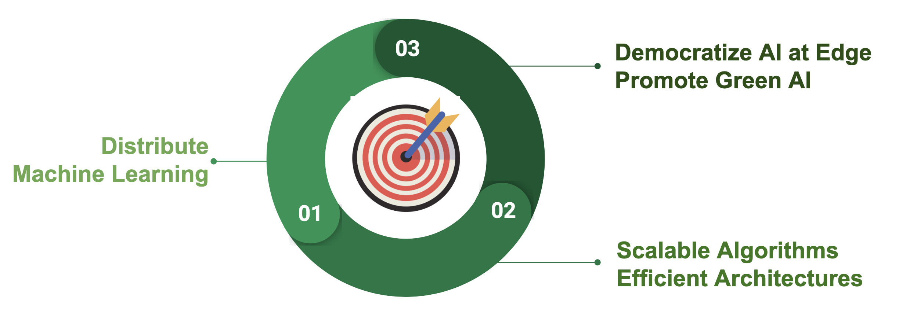
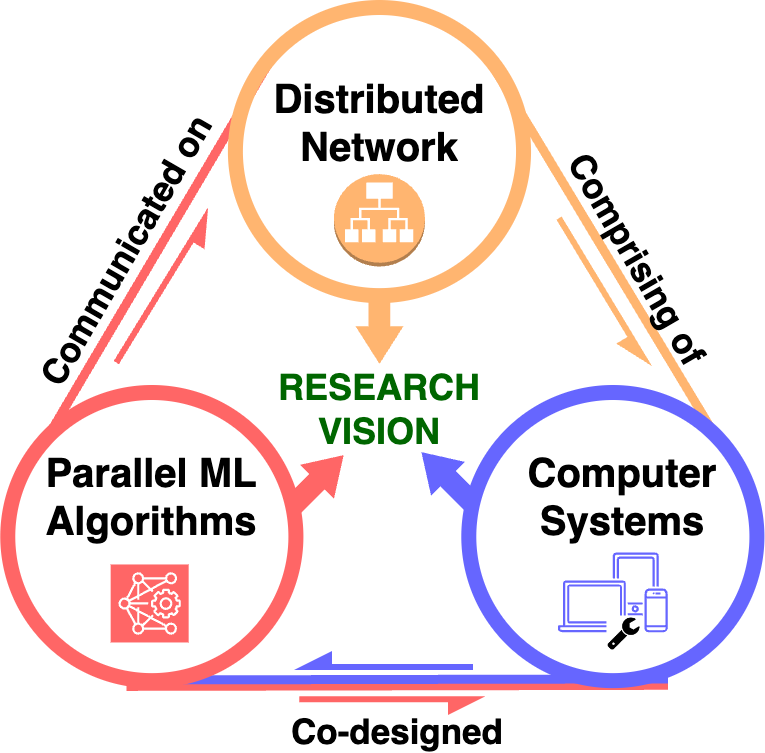

Research
Our research pioneers the frontier of distributed edge intelligence, driven by the vision of a seamlessly interconnected world powered by ubiquitous, sustainable computing. By synergistically co-designing scalable distributed machine learning algorithms and highly efficient hardware architectures, we aim to democratize Artificial Intelligence (AI) and champion the paradigm of Green AI at the edge.

This paradigm shift empowers resource-constrained source devices to process decentralized data streams locally. By orchestrating complex distributed computations with minimal communication overhead, our work fundamentally enhances the performance, efficiency, and resiliency of next-generation machine learning systems, ensuring that advanced AI is both broadly accessible and ecologically responsible.
Our research strategy is structured around the interplay of three key areas:

Distributed Network
We engineer advanced optimization frameworks meticulously tailored for the stringent constraints of edge environments. Our research systematically minimizes synchronization overhead to maximize processor utilization and achieve ultra-low latency. Furthermore, we innovate by mathematically transforming dense, large-scale challenges into memory-efficient, sparse, and separable structures that are highly amenable to massively parallel computation.
Parallel Machine Learning Algorithms
We design and deploy next-generation machine learning paradigms that prioritize minimal memory footprint, accelerated inference latency, and robust data privacy. Our pioneering scalable distributed algorithms drastically reduce communication bottlenecks inherent in parallel model training. By leveraging memory-efficient data summarization and highly concurrent implementations, we provide transformative solutions to rapidly accelerate on-device model learning and adaptation.
Computer Systems
We champion the Green AI movement by synergistically co-designing energy-efficient computing architectures that bring powerful AI capabilities directly to the edge. Our impactful contributions span software-hardware co-design, including multi-FPGA accelerators for distributed machine learning, and the ViTALiTy project, which shatters the quadratic complexity of Vision Transformers via innovative low-rank and sparse attention decomposition paired with pipelined hardware acceleration. Through frameworks like NetDistiller, we elevate the accuracy of Tiny Neural Networks without incurring inference penalties. Pushing the boundaries of conventional silicon, our interdisciplinary ConvLight collaboration pioneers memristor-integrated photonic computing, delivering unprecedented performance, extreme energy efficiency, and ultra-high compute density.